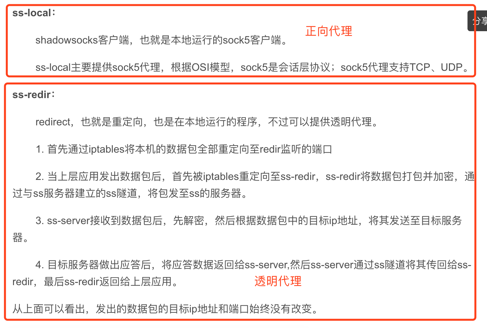

背景
Shadowsocks用作最熟悉的翻墙软件，是程序员面向google开发的利器。
本章通过学习go-shadowsocks源码，了解一下内部实现原理。
<https://github.com/shadowsocks/go-shadowsocks2
ss：ss作者是clowwindy，大约两年前，他自己为了翻墙写了shadowsocks，简称ss或者叫影梭。
ssr：在ss作者被喝茶之后，github上出现了一个叫breakwa11(破娃)的帐号，声称ss容易被防火墙检测到，所以在混淆和协议方面做了改进，更加不容易被检测到，而且兼容ss，改进后的项目叫shadowsocks-R，简称ssr，
屏蔽原理
 {width=”5.768055555555556in”
height=”3.8453707349081365in”}
{width=”5.768055555555556in”
height=”3.8453707349081365in”}
当用户需要获取信息，都经过了 GFW，GFW将它不喜欢的内容统统过滤掉，于是客户当触发 GFW 的过滤规则的时候，就会收到 Connection Reset 这样的响应内容，而无法接收到正常的内容。
<https://sulangsss.github.io/2018/12/18/Network/SS%20SSR%20%E5%8E%9F%E7%90%86/
DNS污染/劫持
在进行域名访问时，首先会将域名通过dns解析为对应的真实IP，然后通过IP进行HTTP访问，所谓DNS攻击手段，即通过某种手段使得客户机发起DNS查询但得到的却是错误的IP，导致客户机无法正常访问。 防火长城会在骨干网出口的53端口进行IDS入侵检测，检测到黑名单域名等，会伪装成域名服务器向客户机发送虚假的回应，由于DNS查询请求一般是基于UDP无连接传输层协议，该协议特征是无状态连接、不可靠传输，DNS查询会接收最先到达的请求，抛弃之后到达的请求，因此导致客户机被欺骗，请求被重定位到虚假IP。
IP封锁
在客户机发送请求到服务器的过程中会经过一系列路由的转发，在路由器转发的过程中会根据路由表中存储的表项来决定下一跳的路由器或主机，选择的下一跳地址会根据路由协议来决定。 早期使用的是ACL（访问控制列表）来进行IP黑名单限制，现在更高效的路由扩散技术来进行对特定的IP进行封锁。早期路由器都是采用静态路由协议，每一条路由需要进行人工来配置路由表项，或者配置一些策略，在决定路由转发，这时可以通过检测，对相应要封锁的IP配置一条错误的路由，将之牵引到一个不做任何操作的服务器（黑洞服务器），此服务器所要做的就是丢包，这样便无声息封锁掉了。动态路由协议的出现可以更高效的进行屏蔽，动态路由协议可以让路由器通过交换路由表信息来动态更新路由表，并通过寻址算法来决定最优化的路径。因此可以通过动态路由协议的路由重分发功能将错误的信息散播到整个网络，从而达到屏蔽目的。
IP/端口黑名单
该手段可以结合上边提到的IP封锁技术，将封锁精确到具体的端口，使该IP的具体端口接收不到请求，从而达到更细粒度的封锁。
经常被封锁的端口如下：
SSH的TCP协议22端口
HTTP的80端口
PPTP类型VPN使用的TCP协议1723端口
L2TP类型VPN使用的UDP协议1701端口
IPSec类型VPN使用的UDP协议500端口和4500端口
OpenVPN默认使用的TCP协议和UDP协议的1194端口
TLS/SSL/HTTPS的TCP协议443端口
Squid Cache的TCP协议3128端口
无状态TCP连接重置
TCP连接会有三次握手，此种攻击方式利用了该特点来进行攻击，gfw会对特定IP的所有数据包进行监控，会对特定黑名单动作进行监控（如TLS加密连接），当进行TCP连接时，会在TCP连接的第二部SYNC-ACK阶段，伪装成客户端和服务器同时向真实的客户端和服务器发送RESET重置，以很低的成本来达到切断双方连接的目的。与丢弃客户机的包相比，在丢包后客户机会不断的发起重试，这样会加重黑洞服务器的负担，利用TCP连接重置来断开连接，客户机也不必发送ACK来确认，这样成本就要低得多。
TCP协议关键字阻断
该手段在无状态TCP连接重置手段之上，加入了关键字过滤功能，当协议的头部包含特定的关键字便对其连接进行重置，比如HTTP协议、ED2K协议等等。
深度包检测
深度数据包检测（Deep packet inspection,DPI）是一种于应用层对网络上传递的数据进行侦测与处理的技术，被广泛用于入侵检测、流量分析及数据挖掘。就字面意思考虑，所谓”深度”是相对于普通的报文检测而言的——DPI可对报文内容和协议特征进行检测。基于必要的硬件设施、适宜的检测模型及相应的模式匹配算法，gfw能够精确且快速地从实时网络环境中判别出有悖于预期标准的可疑流量，并对此及时作出审查者所期望的应对措施。
原理
{width=”5.768055555555556in” height=”2.691666666666667in”}
Shadowsocks 由两部分组成，运行在本地的 ss-local 和运行在防火墙之外服务器上的 ss-server。
ss-local 的职责是在本机启动和监听着一个服务，本地软件的网络请求都先发送到 ss-local，ss-local 收到来自本地软件的网络请求后，把要传输的原数据根据用户配置的加密方法和密码进行加密，转换为socks5协议，再转发到墙外的服务器去。
ss-server 的职责是在墙外服务器启动和监听一个服务，该服务监听来自本机的 ss-local 的请求。在收到来自 ss-local 转发过来的数据时，会先根据用户配置的加密方法和密码对数据进行对称解密，以获得加密后的数据的原内容。同时还会解 SOCKS5 协议，读出本次请求真正的目标服务地址(例如 Google 服务器地址)，再把解密后得到的原数据转发到真正的目标服务。再由ss-server代理进行连接将请求的数据返回给ss-local。
socks 协议
<https://www.ietf.org/rfc/rfc1928.txt
Q&A
ssr如何让帮助浏览器代理的
chrome的switchyOmega插件可在设置的时候，通过指定代理协议和端口，例如ss-local代理端口为1080协议为socks5协议，即可如下设置：
{width=”5.768055555555556in” height=”2.25625in”}
以ShadowSocks macos客户端为例，当打开”小飞机”之后，在网络代理里会添加并设置代理参数，pac（proxy auto-config）文件，它是一个自动代理配置脚本，包含了很多使用 JavaScript 编写的规则，它能够决定网络流量走默认通道还是代理服务器通道，控制的流量类型包括：HTTP、HTTPS 和 FTP。
{width=”5.768055555555556in” height=”4.728472222222222in”}
在pac文件中，标识了代理的端口为macos 安装的shadowsocks的客户端代理的端口1086。
{width=”5.768055555555556in” height=”3.2979166666666666in”}
ssr中pac写的也是1086，那1087什么时候使用的
查看Shadowsocks的进程可以看到有ss-local 和 privoxy两个进程，ss-local是做socks5代理的，监听1086端口，而privoxy监听了1087端口，用来将http请求转为socks5，并转发给1086端口的。
{width=”5.768055555555556in” height=”0.5270833333333333in”}
可通过如下指令测试：
curl --socks5 127.0.0.1:1086 <http://google.com
curl --proxy 127.0.0.1:1087 http://google.com
它可以根据配置，进行目标地址选择性代理。
{width=”2.618601268591426in” height=”2.661111111111111in”}
原理如下图：
{width=”5.768055555555556in” height=”2.306344050743657in”}
Socks和VPN的区别
VPN 比shadowsocks更加底层，它通过操作系统的接口直接虚拟出一张网卡，后续整个操作系统的网络通讯都将通过这张虚拟的网卡进行收发。并且VPN的设置是全局的，即电脑一旦挂上VPN，所有的联网程序都将自动使用VPN。
虽然可以通过route指定内网ip和外网ip的规则，但这只适合企业少量内网ip访问情况。
为什么要混淆？
本文中的go-shadowsocks 是直接使用socks协议进行代理的，而ssr（shadowsocksR <https://github.com/shadowsocksr-backup/shadowsocksr.git ）是在这基础上添加了混淆功能。为什么要混淆？
简单来说用的人多了GFW聪明了，需要对GFW进行欺骗一下，减少此类代理特征，让GFW无法识别出这是个”梯子”。
对下面的进行理解，就明白为什么要混淆，并且也应该能知道如何能自己实现一个梯子了，即使实现方式不用socks5
{width=”5.768055555555556in” height=”2.5902777777777777in”}
混淆的实现
{width=”2.9in” height=”2.1210345581802277in”}
以我使用的http_simple为例子，它做的工作就是将请求的数据伪装为一个访问王长的http请求。
{width=”5.768055555555556in” height=”1.8715277777777777in”}
注：http的header和body之间通过回车和换行来区分。
{width=”5.768055555555556in” height=”2.248611111111111in”}
通常ssr服务端开启的都是一个随机端口，然后让client进行连接，随着使用人的增加，特征慢慢也多了（机器学习），还是有可能被GFW识别出来，所以有人提出了新的伪装，就是自己开通一个有域名的网站，走80端口，让GFW以为是正常在访问网站。
其他更多混淆参考：
<https://blog.csdn.net/mmcooo/article/details/80094194
https不就是加密的，也会被识别？
用https内容加密操作，直接代理不久可以了，为什么要用http+body加密？
以下是ssr作者的回答：
 {width=”5.768055555555556in”
height=”2.0034722222222223in”}
{width=”5.768055555555556in”
height=”2.0034722222222223in”}
<https://gist.github.com/clowwindy/5947691
Openwrt里直接安装后，如何代理所有wlan的接入？
翻墙时，需要有个本地端口监听，通过插件或者”小飞机”将流量转发到该端口中才能完成代理，但是openwrt集成shadowsocksr-libev之后，就能代理所有无线网的请求了，怎么实现的？包含代理的固件为（<https://github.com/coolsnowwolf/）
与之前本地起一个ss-local端口，进行正向代理不同。在linux机器上，通过启动ss-redir和在iptables上定义网络包的转发策略，实现了用户无感知的透明代理，透明代理后，用户将不会在设置浏览器插件。
实现为如下
通过iptables，对局域网的流量进行过滤，其他流量都走监听端口，在此示例中，ss-redir监听端口为 12345,（该监听端口为ss-redir端口，而不是ss-local端口）
{width=”5.768055555555556in” height=”4.095833333333333in”}
该固件是在实现了 <https://github.com/shadowsocksrr/shadowsocksr-libev 的基础上，增加了luci-app-ssr-plus（<https://github.com/coolsnowwolf/lede/tree/9eeb898ee39567d5eef5d7e87c3db062ce9c860b/package/lean/luci-app-ssr-plus ）插件。
通过ipset定义管理了gfwlist的ip集合和名为china的国内ip的范围，通过iptables进行匹配选择是否走代理。比如下面描述，匹配了目标地址为gfwlist，目标地址不为china 的ip集合的就跳转到SS_SPEC_WAN_FW chain中，在SS_SPEC_WAN_FW里定义了内网就return，其他的就走local_port 也就是上面提到的12345端口。更多参考文件（/usr/bin/ssr-rules）
{width=”4.597458442694663in” height=”0.5694739720034996in”}
 {width=”5.768055555555556in”
height=”1.1722222222222223in”}
{width=”5.768055555555556in”
height=”1.1722222222222223in”}
{width=”5.768055555555556in” height=”2.670138888888889in”}
{width=”5.768055555555556in” height=”3.888888888888889in”}
<https://github.com/zfl9/ss-tproxy
<https://www.zfl9.com/ss-redir.html
<https://vvl.me/2018/06/from-ss-redir-to-linux-nat/
复盘
复述所学
用自己的话复述学到的内容
Shadowsocks用socks协议做了一款http的代理服务，分为client端和server端，client启动后会监听端口，浏览器可以将http请求转为socks协议格式输出到client端口中，client会将数据转发的哦server端。
server端收到消息后，将数据解析，获得client浏览器想请求的请求地址和内容，并进行真实的请求动作，将请求的相应内容传回给client。
这样就将真实的http请求进行了伪装，防止了GFW解析http后，对该请求的拦截。
慢慢的这种简单的代理被识别，变得不好用了，之后就基于Shadowsocks出现了ShadowsocksR，对传输内容进行”混淆”操作，使得请求不像是翻墙的请求。
关联经验
学到的内容和自己往期那些经验或认知相关，描述关联
- Shadowsocks的实现思路很清晰也很简单，和分布式里面的rpc设计相差不大，通过自己定义协议内容，实现相应的代理功能
行动计划
接下来我会把这些经验用在哪些地方
-
买服务器自己实现一个稳定的代理，方便自己面向google开发
-
参考socks协议，以后定义协议的时候可以更加精简，可以效仿
参考
<https://sulangsss.github.io/2018/12/18/Network/SS%20SSR%20%E5%8E%9F%E7%90%86/
<https://sq.163yun.com/blog/article/185530682109534208
<https://segmentfault.com/a/1190000011485579
<https://gist.github.com/clowwindy/5947691
<http://waimian.me/?thread-95.htm
<http://ssr.bingly.cn/user/tutorial
<https://choucuoqiong.blogspot.com/p/ssr.html
<https://github.com/hq450/fancyss_history_package
<https://github.com/coolsnowwolf/lede
<http://ss.lt8.me/user/node
<http://nulastudio.org/Freedom/